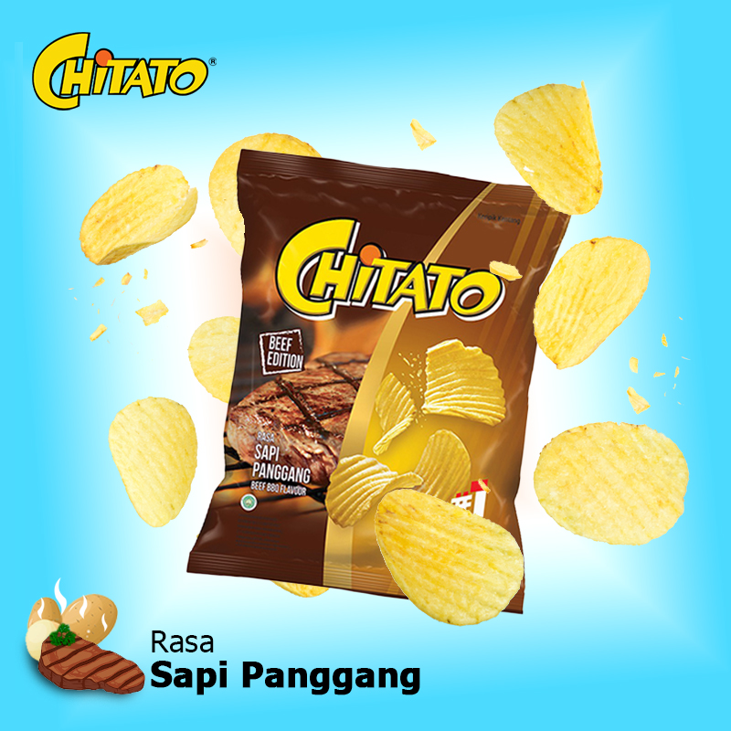
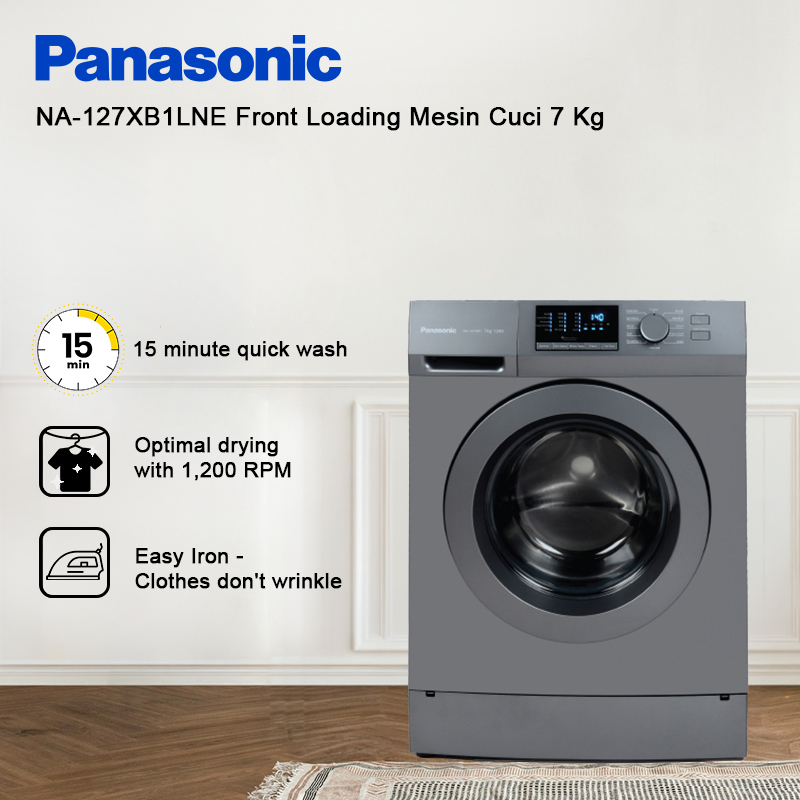
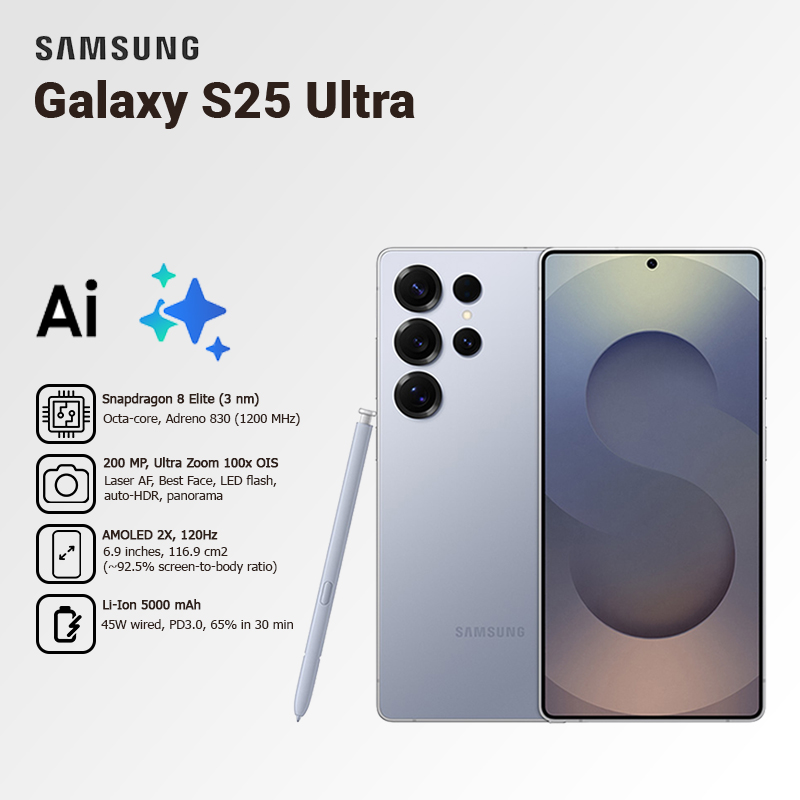
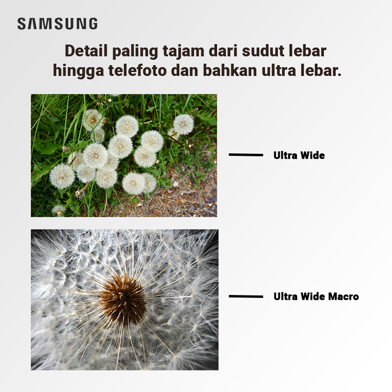
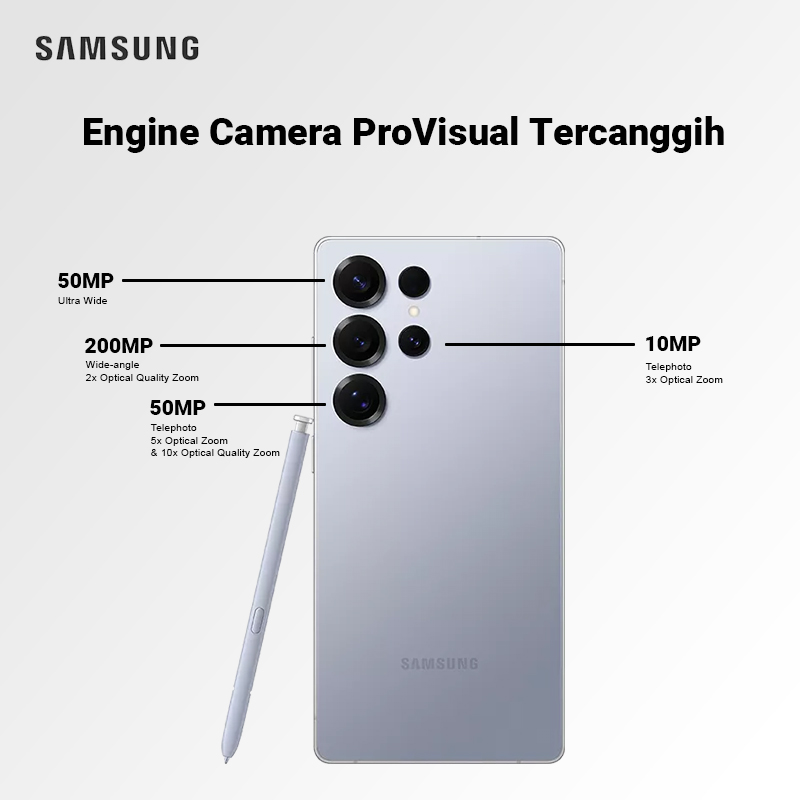
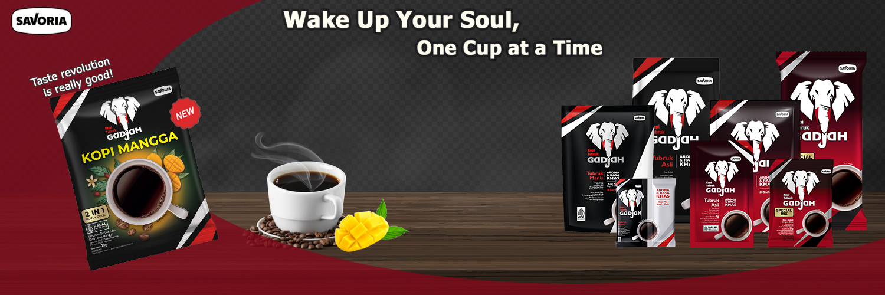

Project Description: Digital Imaging experiment for Fast Moving Consumer Goods (FMCG) products. Focused on dynamic element manipulation to create a "sticky taste" impression.

Project Description: Electronic product catalog banner design combining lifestyle elements with technical specifications.



Project Description: Product infographic design to highlight the flagship features of Samsung Galaxy S25. Focus on clean layout, clear visual hierarchy, and highlighting AI features.

Project Description: Wide-banner design for a new coffee variant product campaign. Emphasizing branding and the unique product mood.